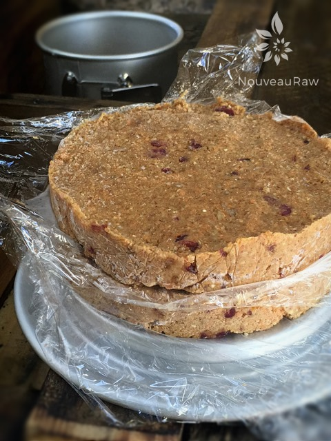
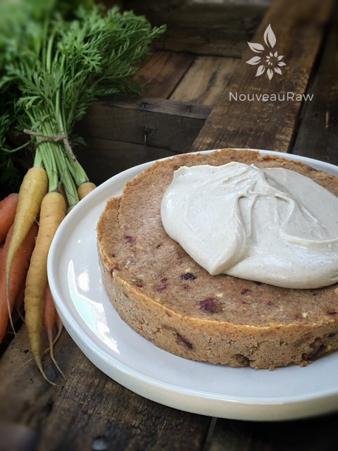
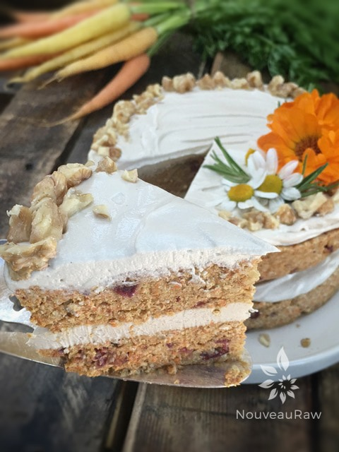
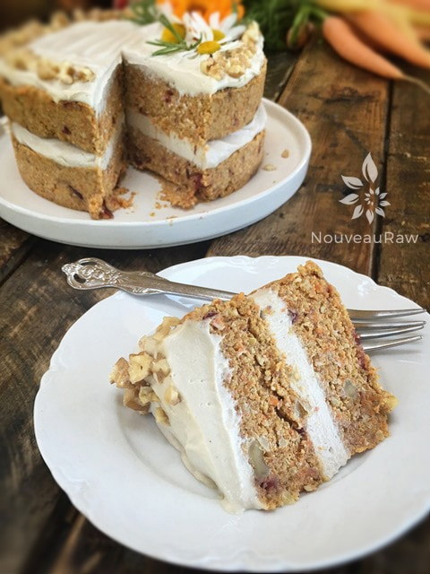
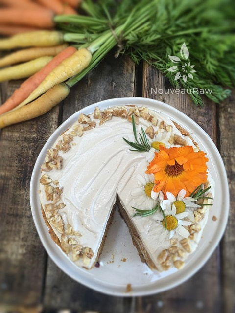
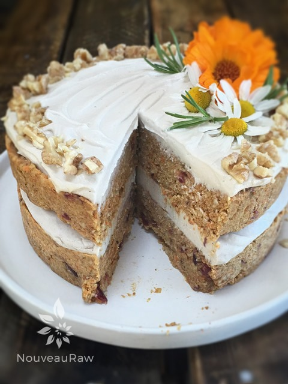

Rosemary Cranberry Carrot Cake

~ raw, vegan, gluten-free ~
Rosemary Cranberry Carrot Cake is an incredibly moist cake that uses a blend of ground activated almonds, oats, and for the “flour” base almond pulp. The almond flour gives the cake a beautiful lofty texture which is exactly what I was aiming for.
This delicious cake is loaded with warm spices, walnuts, chewy dried cranberries, shredded carrots, and crunchy bits of buttery walnuts. I added in a hint of fresh, finely chopped rosemary which gives an ever-so-subtle fragrance to this luxurious dessert. It’s this herbal note that really ties the other flavors together.
Earlier I mentioned that I use the almond pulp to give the cake a lighter texture. This is true, but I also added flax seeds and psyllium which are vital for holding the cake together and giving a light, spongy texture.
It’s all about flavor, texture, and nutrients. And let’s not forget about the presentation. :) You can decorate this cake any way you want. I just so happened to have some edible flowers, so I arranged a few on top with a few sprigs of fresh rosemary and lastly, a sprinkle of crushed walnuts around the edge.
This recipe is perfect for Thanksgiving, but shouldn’t be limited to just one holiday or day of the year. Enjoy it year-round! Think outside of the (cake) box. hehe
To get the best tasting cake, make sure that your ingredients are fresh. I talk about this all the time, but it is so important. This isn’t the time or place to “hide” woody carrots or tasteless pumpkin in a recipe. Always taste test as you create a dish. It will only be as good as the ingredients that you put into it. I hope that you enjoy this recipe and I look forward to hearing from you. Blessings, amie sue
yields double layer, 6-8″ cake
Dry ingredients:
Wet ingredients:
- 1 cup pumpkin puree
- 1/2 cup water
- 1/2 cup raw honey (vegan option below)
Add-ins:
Icing:
Preparation:
- In the food processor, fitted with the “S” blade, process the almonds and oats until they reach a small mealy consistency.
- Add flax, psyllium, pumpkin spice, cinnamon, salt, and rosemary. Pulse till mixed and then pour into a medium-sized bowl. Set aside.
- If don’t have pumpkin spice, you can make your own: 4 tsp ground cinnamon, 2 tsp ground ginger, 1 tsp Allspice, and 1 tsp nutmeg. Mix ingredients in a bowl. Yields 8 teaspoons of Pumpkin Spice. Store in an airtight container.
- In the food processor combine the pumpkin puree, water, and honey. Process till combined.
- You can use a blender for this but why dirty another appliance.
- If you want to make this batter sweeter, in addition to the honey add 2 Tbsp raw agave or maple syrup and taste test. The agave/maple syrup will brighten the honey’s sweetness.
- I used a very thick raw honey… so thick that you can turn the jar upside down and it won’t budge. If you wish to make this cake vegan, I would use a very thick sweetener such as a date paste. Be aware it will darken the color of the cake a tad.
- Add the pumpkin sauce to the dry ingredients and mix this together by hand.
- Add the almond pulp, cranberries, walnuts, and shredded carrots. Mix with hands.
- Line the pan with plastic wrap.
- Place 1/2 of the batter in the pan and with a light hand, press the batter down evenly. Don’t press too hard. Let it sit for 15 minutes. Good time to do the dishes. By packing the batter in loosely, it will give you a lighter feeling cake, not so dense.
- I used a 6″ Springform pan, which I always find much easier for removing cakes to decorate and serve them.
- Place another piece of plastic wrap on top of the pressed cake layer and add the remaining batter on top, pressing it evenly and gently. Place in the freezer for the layer to firm up.
- Remove from the freezer and remove the out ring of the Springform pan.
- Lift the first layer off by the edges of the plastic wrap and set it on the counter.
- Remove the bottom cake layer, toss the plastic wrap, and place the cake layer on a plate or serving dish.
- Place 3/4 cup of frosting on the first layer and spread evenly to the edges.
- Remove the plastic from the other cake layer and place the cake on top of the frosted layer.
- Add another 3/4 cup of frosting on top and spread evenly.
- Decorate and enjoy right away. Or hold off on decorating if you plan on freezing it to enjoy at a later time.
- Store this cake in an air-tight container, in the fridge, for 3-5 days. Or freeze for up to one month.






© AmieSue.com